De 5 Leukste Camperplaatsen in Nijmegen
Gepubliceerd op 17 januari 2023, bijgewerkt op 8 november 2023
Onderdeel van de gids Overnachten in Nijmegen en Campings in Nijmegen

Houd jij van kamperen, maar gaat het slapen in een tent jou toch net een stapje te ver? Dan kun je ervoor kiezen om met de camper uit kamperen te gaan. Op deze manier geniet je toch van de unieke ervaring, terwijl je lekker droog en warm in je camper kunt overnachten. Het is echter goed om te weten dat niet alle campings camperplaatsen aanbieden. Sterker nog, niet iedere camping is toegankelijk voor campers. Om jou alvast wat op weg te helpen, hebben wij onderzoek gedaan naar de leukste camperplaatsen in Nijmegen.
Camperpark Lingewaard en camping Waalstrand bevinden zich op steenworp afstand van diverse prachtige natuurgebieden. De natuurliefhebber is hier absoluut op zijn plek. Vakantiepark de Oude Molen is met zijn vele recreatievoorzieningen in het hoogseizoen, de ideale camping voor gezinnen. Op zoek naar een budget camping? Dan is camper erf de Holtsehoek wellicht een goede optie.
Benieuwd welke camperplaats in Nijmegen het beste aansluit bij jouw persoonlijke wensen? Lees dan het onderstaande artikel grondig door. Wij vertellen je namelijk alles wat je moet weten. We bespreken maar liefst 5 verschillende camperplaatsen in de omgeving van Nijmegen. Iedere camping heeft zijn eigen unieke kenmerken. Laten we deze dus stuk voor stuk onder de loep gaan nemen.
Camperplaatsen in Nijmegen – Onze Top 5
Wij hebben speciaal voor jou een top 5 samengesteld met daarin de allerleukste camperplaatsen in de omgeving van Nijmegen. Wij hopen dat deze lijst jou helpt bij het vinden van een geschikt camperpark voor jouw volgende kampeer avontuur. We bespreken de voor- en nadelen van de verschillende camperplaatsen, en hopen dat jij op basis hiervan een weloverwogen keuze kunt maken.
1. Vakantiepark de Oude Molen
De nummer één op onze lijst is vakantiepark de Oude Molen. Deze gezellige camping ligt in Groesbeek, op nog geen 10 kilometer afstand van Nijmegen centrum. Met de auto is het slechts een kwartiertje rijden. Het vakantiepark ligt in een bosrijke omgeving en is geschikt voor zowel jong als oud.
Vakantiepark de Oude Molen verwelkomt verschillende vakantiegangers. Of je nu wenst te kamperen in een tent, caravan of camper, op vakantiepark de Oude Molen is iedereen welkom. Ook beschikt het park over diverse chalets die gehuurd kunnen worden. Het gaat om huisje voor 4, 6 en 8 personen.
De unieke locatie van dit park biedt veel mogelijkheden aan voor de actieve vakantieganger. Prachtige wandelroutes of heerlijk uitwaaien op de fiets, in het prachtige Groesbeek geniet je met volle tuigen. In het hoogseizoen richt de camping zich voornamelijk op gezinnen met kinderen. Het is hier dan ook een gezellige boel waarbij het échte camping gevoel optimaal aanwezig is.
Alhoewel de prijzen van deze camperplaats in het laagseizoen redelijk goedkoop zijn, lopen deze in het hoogseizoen aardig op.
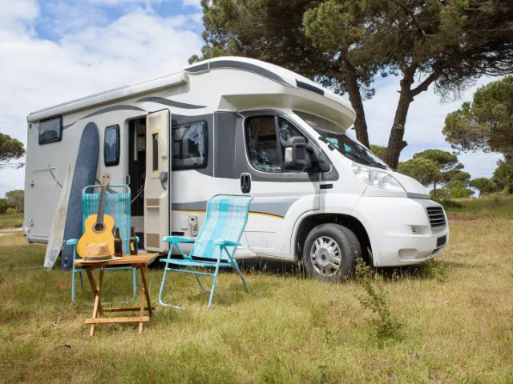
2. Camperpark Lingewaard
De tweede locatie die we nader onder de loep willen nemen is camperpark Lingewaard. Dit park is gevestigd in Gendt, en met de auto ben je slechts 20 minuten verwijdert van het centrum van Nijmegen. Het is een rustige en zeer comfortabele plek.
Camperpark Lingewaard biedt 20 exclusieve camperplaatsen aan die van alle gemakken zijn voorzien. Met maar liefst 100 vierkante meter per standplaats kun je hier iedere camper kwijt. Ook campercaravan combinaties kunnen dus met een gerust hart op dit park verblijven.
Natuurgebied de Betuwe is vanaf camperpark Lingewaard heel eenvoudig te bereiken. Hier is een hoop te beleven. Denk bijvoorbeeld aan prachtige fietstochten langs de Waal en de Rijn. Ook heeft de omgeving diverse bezienswaardigheden te bieden. Het middeleeuwse kasteel Doornenburg is hiervan een prachtig voorbeeld. Eén ding is zeker, jij hoeft je niet te vervelen wanneer je verblijft op camperpark Lingewaard.
In vergelijking met veel andere camperplaatsen is dit park redelijk betaalbaar. Je krijgt bovendien waar voor je geld met de grote oppervlakte per standplaats.
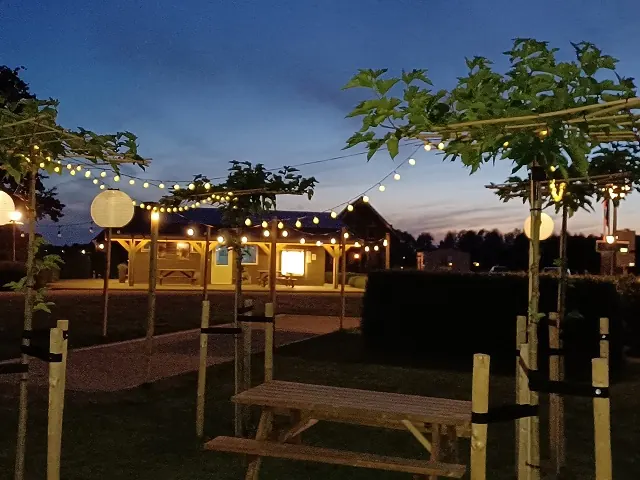
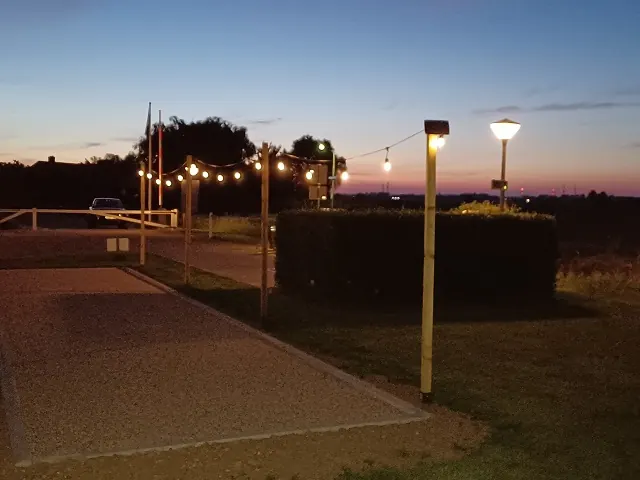
3. Landwinkel De Woerdt
Landwinkel De Woerdt is een oude boerderij in Ressen, op slechts 7,5 kilometer afstand van Nijmegen. Deze boerderij biedt niet alleen diverse camperplaatsen aan, er bevindt zich ook een winkel met heerlijke streekproducten. Jij weet dus waar je jouw verse broodjes in de ochtend kunt halen!
Het terrein van landwinkel De Woerdt biedt 15 camperstandplaatsen aan. Op deze camperplek is er van alles te beleven. Alle zintuigen worden geprikkeld tijdens een verblijf op deze magische plek. Excursies, proeverijen en diverse workshops, het is nooit saai bij landwinkel De Woerdt.
Met een prijs van €17 per camper per nacht is dit absoluut een betaalbare camperplaats. Dit is namelijk inclusief elektriciteit. Wel betaal je hier bovenop nog toeristenbelasting. Echter gaat dit niet om noemenswaardig grote bedragen.
4. Camping Waalstrand
Camping Waalstrand ligt pal aan het water in de prachtige plaats Gendt. Deze camping bevindt zich op ongeveer 25 minuutjes rijden van Nijmegen. Het is een heerlijk rustige plek met uitzicht over rivier de Waal. Dit prachtige uitzicht is absoluut een waardevolle toevoeging aan jouw kampeerervaring.
In totaal heeft camping Waalstrand meer dan 100 plaatsen. Echter zijn slechts 10 speciaal verharde camperplaatsen voor campers tot 9 meter. Op de camping zelf kunnen ook campers prima terecht tot 7 meter. En wil je direct aan het water staan dan moet je er op tijd bij zijn wil je met jou camper terecht kunnen op deze rustgevende plek.
Op deze camping kun je niet alleen genieten van een prachtig uitzicht, je kunt er ook heerlijk fietsen of wandelen in de vrije natuur. Van prachtige dijken tot charmante natuurpaden, het landschap is enorm divers. De camping beschikt bovendien over een buitenbad en diverse andere recreatievoorzieningen voor jong en oud.
In vergelijking met de overige campings in deze lijst is het Waalstrand een prijzige plek. Je betaalt immers voor een adembenemend mooi uitzicht en een vakantie bomvol unieke ervaringen. Neem jij jouw viervoeter graag mee op vakantie? Dan is camping Waalstrand niet geschikt. Het is namelijk een hondenvrije camping.
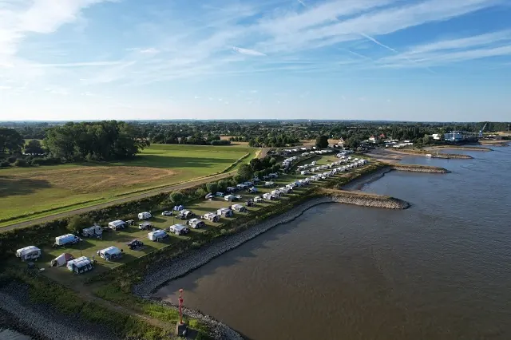
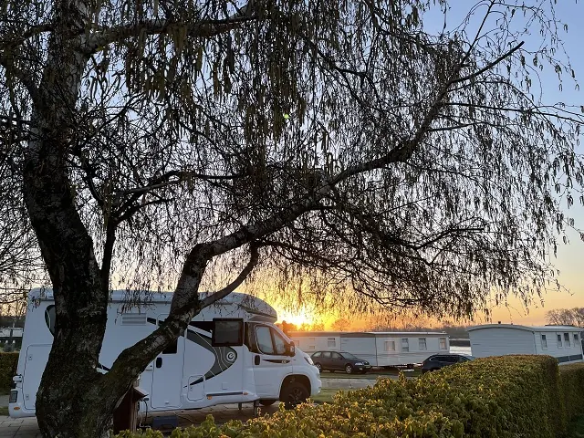
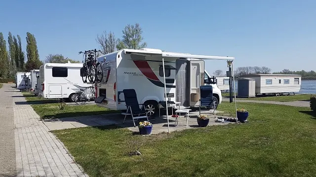

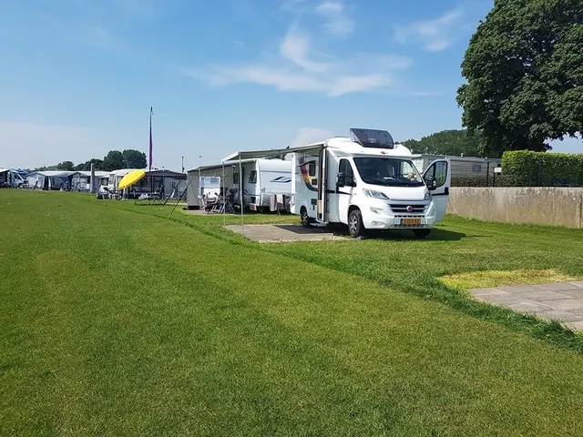
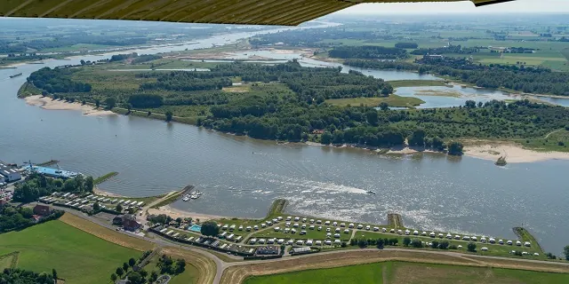
5. Camper erf Balgoy de Holtsehoek
De laatste camperplaats in onze top vijf is het gezellige erf de Holtsehoek te Balgoy. Dit is één van de mooiste dorpen in Wijchen, en ligt op slechts 16 kilometer afstand van Nijmegen. Camperplaats de Holtsehoek is een knusse en charmante kampeerplek voor campereigenaren.
In de omgeving is genoeg te beleven. Van prachtige uitzichten op de Maas tot gezellige historische dorpjes in Wijchen, het is er daadwerkelijk prachtig. Ook zijn er diverse natuurgebieden waar de natuurliefhebber zijn ogen uit zal kijken.
Camper erf de Holtsehoek is een goedkope camperplaats. Echter betaal je wel extra kosten voor stroom en het gebruik van sanitaire voorzieningen.
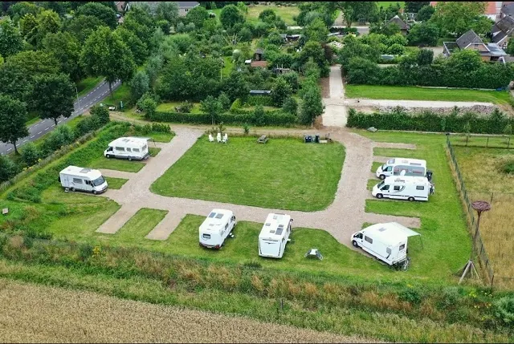
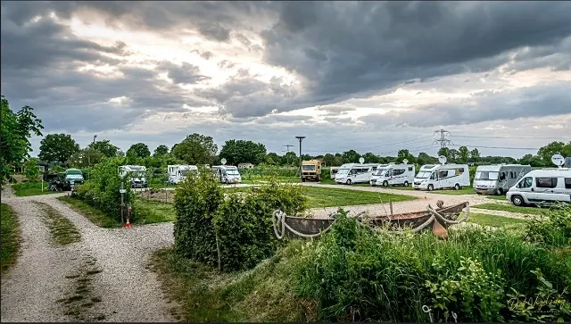
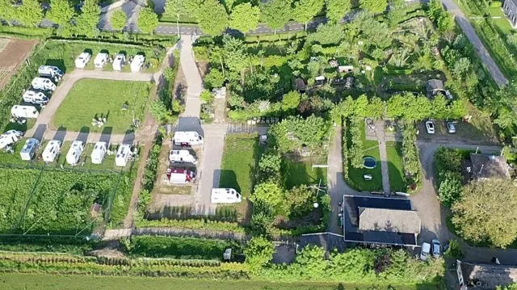
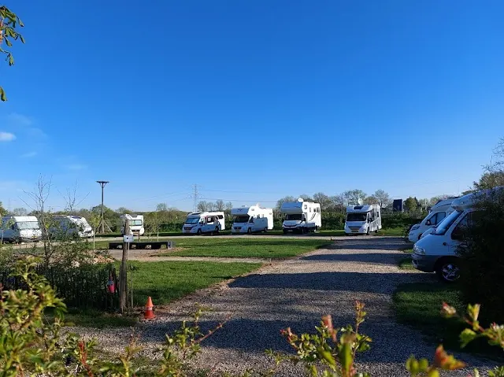
Hopelijk kan je aan de hand van onze 5 suggesties een keus maken waar je wilt overnachten in Nijmegen. Zoek je nog inspiratie om een hapje te eten in Nijmegen. Ben je meer geïnteresseerd om naar een café toe te gaan waar het één en al historie ademt, lees dan vooral dit historische artikel.